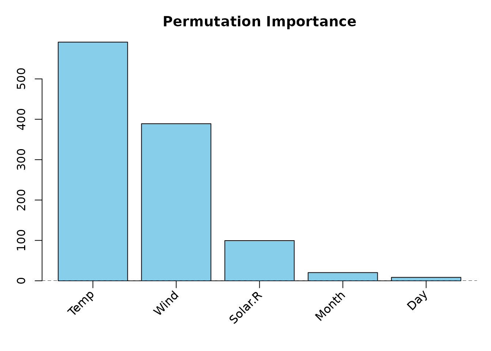
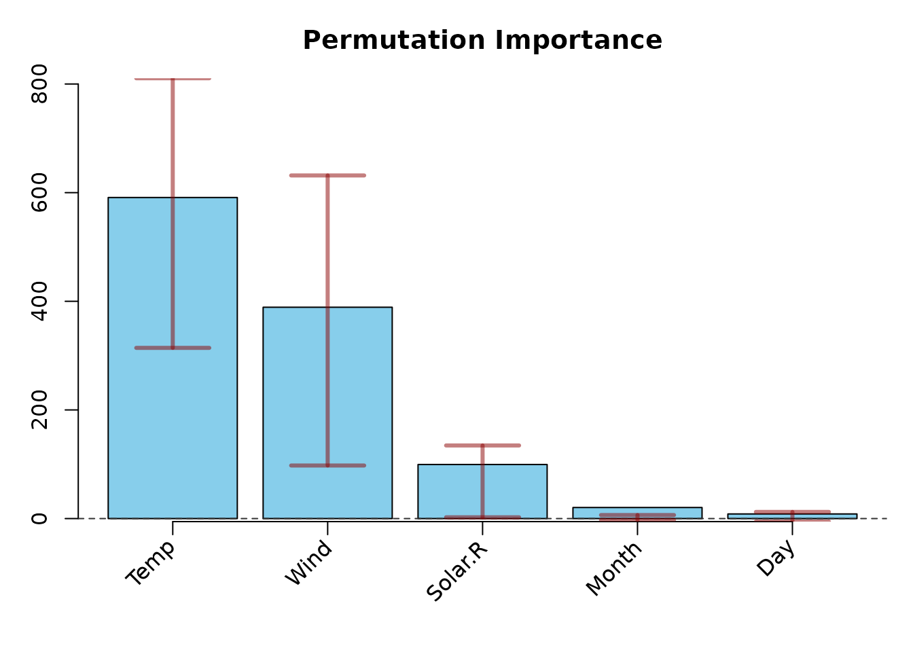
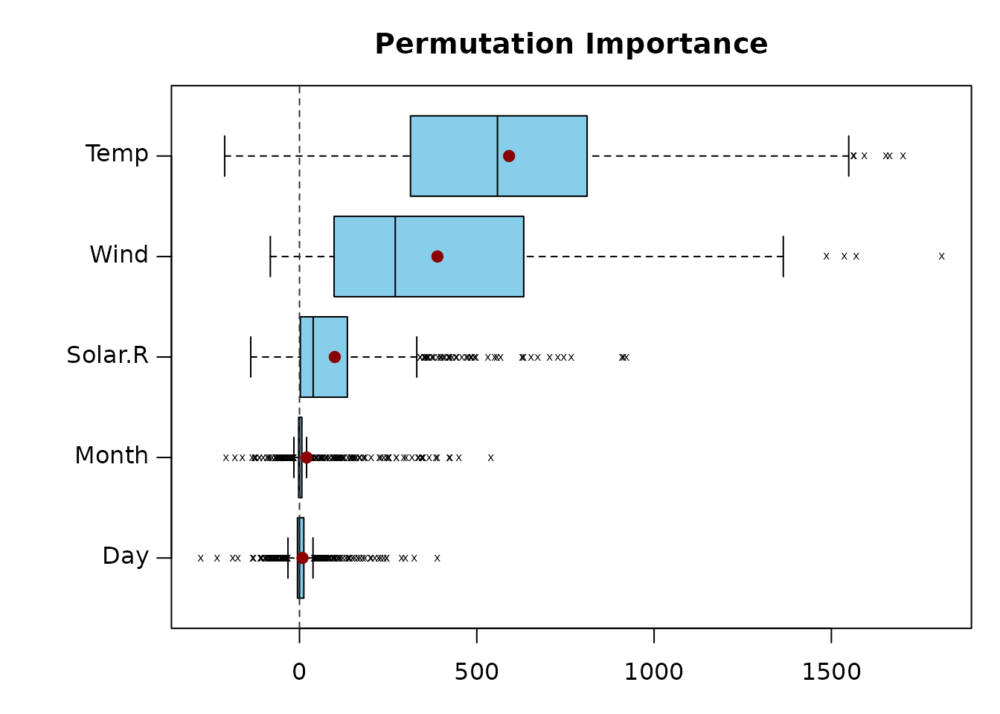
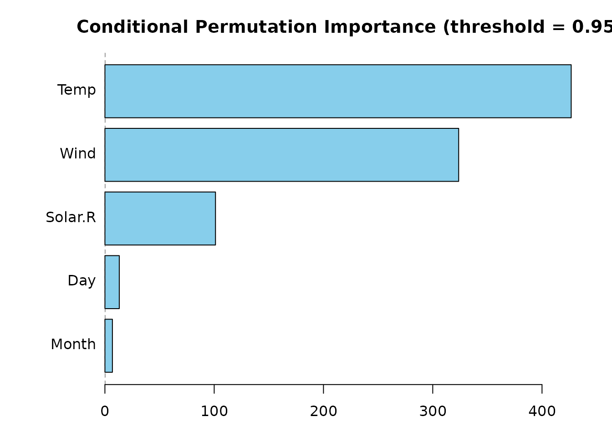

The permimp-package
Dries Debeer
University of Zurich2025-03-28
permimp-package.RmdAbstract
Thepermimp-package is developed to replace the
Conditional Permutation Importance (CPI) computation by the
varimp-function(s) of the party-package.
permimp applies a different implementation for the
CPI, in order to mitigate some issues related to the
implementation of the CPI in the party-package. In
addition, the CPI is also available for random forests grown by
the randomForest-package. Finally, the package
includes some plotting options.
Introduction
Although originally designed for prediction purposes, Random forests Breiman (2001) have become a popular tool to assess the importance of predictors. Several methods and measures have been proposed, one of the most popular ones is the Permutation Importance Breiman (2001), originally referred to as the Mean Decrease in Accuracy. Inspired by the contrast between the unconditional zero-order correlation between predictor and outcome, and the conditional standardized regression coefficient in multiple linear regression, Strobl et al. (2008) argued that in some cases the importance of a predictor, conditionally on (all) other predictors, may be of higher interest than the unconditional importance. Therefore, they proposed the Conditional Permutation Importance, which introduces a conditional permutation scheme that is based on the dependence between the predictors.
The permimp-package presents a different implementation
of this Conditional Permutation Importance. Unlike the original
implementation (available in the party R-package of Hothorn, Hornik, and Zeileis (2006)),
permimp can, in addition to random forests that were grown
according to the unbiased recursive partitioning
(cf. cforests; Hothorn, Hornik, and
Zeileis (2006)), also deal with with random forests that were
grown using the randomForest-package Liaw and Wiener (2002), which applies the
original tree growing algorithm based on impurity reduction Breiman (2001). (In principle, the
permimp can be extended to random forests grown by other
packages, under the condition that tree-wise predictions are possible
and OOB-information as well as the split points are available per tree.)
We argue that the permimp-package can be seen as a
replacement for the varimp-functions of the
party package in R.
This vignette has two main parts. The first part is tutorial-like and
demonstrates functionality of the permimp-package (by also
comparing it to original party::varimp-functions. The
second part is more theoretical and explains the how and the why of the
new Conditional Permutation Importance-implementation.
Part I: permimp-tutorial
A. The permimp-function
The permimp-function replaces all the
party::varimp-functions (varimp,
varimpAUC, varimpsurv). To apply
permimp-function, one needs a fitted random forest. Within
this tutorial we will mainly focus on random forests-objects as obtained
by the party::cforest-function (i.e., S4-objects of class
"RandomForest"). As an example we will use the (cleaned)
airquality-data set to fit random forest with 50 trees:
library("party", quietly = TRUE)
#>
#> Attaching package: 'zoo'
#> The following objects are masked from 'package:base':
#>
#> as.Date, as.Date.numeric
library("permimp")
set.seed(542863)
airq <- subset(airquality, !(is.na(Ozone) | is.na(Solar.R)))
cfAirq50 <- cforest(Ozone ~ ., data = airq,
control = cforest_unbiased(mtry = 2, ntree = 50,
minbucket = 5,
minsplit = 10))A.1. New Conditional Permutation Importance
Let’s start by comparing the permimp and the
varimp function for the conditional permutation
importance.
system.time(CPI_permimp <- permimp(cfAirq50, conditional = TRUE, progressBar = FALSE))
#> user system elapsed
#> 0.180 0.014 0.194
system.time(CPI_varimp <- varimp(cfAirq50, conditional = TRUE))
#> user system elapsed
#> 1.288 0.005 1.294
CPI_permimp
#> Solar.R Wind Temp Month Day
#> 83.736656 209.786231 422.671385 1.820496 -7.668462
CPI_varimp
#> Solar.R Wind Temp Month Day
#> 25.147792 114.250197 220.080351 1.952776 -1.265111Three differences can easily be spotted:
-
permimphas aprogressBar-argument. The default isprogressBar = interactive()1 -
permimpis faster thanvarimp. - The results are different.
A.2. Different results?
Why are the results different?
There are two main reasons.
First, permimp uses a different default
threshold-value: permimp uses
threshold = .95 while varimp uses
threshold = 0.2. Check ?permimp and
?varimp. There is a good reason for using a higher default
threshold value.
When using equal threshold-values…
CPI_permimp <- permimp(cfAirq50, conditional = TRUE, threshold = .2, progressBar = FALSE)
CPI_permimp
#> Solar.R Wind Temp Month Day
#> 26.9974775 122.2781497 204.0238116 -3.1201748 0.8442593
CPI_varimp
#> Solar.R Wind Temp Month Day
#> 25.147792 114.250197 220.080351 1.952776 -1.265111The results are more similar, but not quite identical. The remaining
differences are explained by the second reason: the implementation of
permimp differs from the
varimp-implementation. Using a higher
threshold-value makes the differences between the two
implementations more pronounced.
CPI_varimp <- varimp(cfAirq50, conditional = TRUE, threshold = .95)
CPI_permimp
#> Solar.R Wind Temp Month Day
#> 26.9974775 122.2781497 204.0238116 -3.1201748 0.8442593
CPI_varimp
#> Solar.R Wind Temp Month Day
#> 36.758973 198.610059 257.916926 -2.537016 -2.530303The differences between the two implementations (and why we believe the new implementation is more attractive), is explained in the second part of this document, as well as in this manuscript: Debeer and Strobl (2020).
A.3. Backward Compatible with party when:
asParty = TRUE
By specifying asParty = TRUE, the
permimp-function can be made backward compatible with the
party::varimp-function. But permimp is a bit
faster. To get exactly the same results, the random seeds should be
exactly the same.
set.seed(542863)
system.time(CPI_asParty <- permimp(cfAirq50, conditional = TRUE, asParty = TRUE, progressBar = FALSE))
#> user system elapsed
#> 0.262 0.000 0.262
set.seed(542863)
system.time(CPI_varimp <- varimp(cfAirq50, conditional = TRUE))
#> user system elapsed
#> 1.269 0.000 1.269
CPI_asParty
#> Solar.R Wind Temp Month Day
#> 36.364271 136.732886 200.620728 3.179600 1.360632
CPI_varimp
#> Solar.R Wind Temp Month Day
#> 36.364271 136.732886 200.620728 3.179600 1.360632Note that with asParty = TRUE the default
threshold-value is automatically set back to
0.2.
A.4. Different Output: VarImp-object
A less obvious difference between permimp and
varimp is the object that it returns. permimp
returns an S3-class object: VarImp, rather than a named
numerical vector. A VarImp object is a named list with four
elements:
-
$values: holds the computed variable importance values. -
$perTree: holds the variable importance values per tree (averaged over the permutations whennperm > 1). -
$type: the type of variable importance. -
$info: other relevant information about the variable importance, such as the usedthreshold.
## varimp returns a named numerical vector.
str(CPI_varimp)
#> Named num [1:5] 36.36 136.73 200.62 3.18 1.36
#> - attr(*, "names")= chr [1:5] "Solar.R" "Wind" "Temp" "Month" ...
## permimp returns a VarImp-object.
str(CPI_asParty)
#> List of 4
#> $ values : Named num [1:5] 36.36 136.73 200.62 3.18 1.36
#> ..- attr(*, "names")= chr [1:5] "Solar.R" "Wind" "Temp" "Month" ...
#> $ perTree:'data.frame': 50 obs. of 5 variables:
#> ..$ Solar.R: num [1:50] 117.35 0 1.81 0 58.22 ...
#> ..$ Wind : num [1:50] 118.8 430.7 141.5 171 78.1 ...
#> ..$ Temp : num [1:50] 374 433 118 -1 175 ...
#> ..$ Month : num [1:50] -4.59 0 34.93 -11.96 -11.9 ...
#> ..$ Day : num [1:50] 0 18.93 0 7.18 0 ...
#> $ type : chr "Conditional Permutation"
#> $ info :List of 4
#> ..$ threshold : num 0.2
#> ..$ conditioning: chr "as party"
#> ..$ outcomeType : chr "regression"
#> ..$ errorType : chr "MSE"
#> - attr(*, "class")= chr "VarImp"
## the results of permimp(asParty = TRUE) and varimp() are exactly the same.
all(CPI_asParty$values == CPI_varimp)
#> [1] TRUEAn advantage of the VarImp-object, is that the
$perTree-values can be used to inspect the distribution of
the importance values across the trees in a forest. For instance, the
plotting function (demonstrated below) can be used to visualize this
distribution of per tree importance values.
A.5. Unconditional Permutation Importance: permimp =
varimp
Of course, there is also the option to compute the unconditional
permutation importance. Both using the original and the split wise
permutation algorithm. Here, there are no differences between
permimp and varimp. That is,
permimp simply uses the party
varimp code, making the asParty argument
redundant in this case. Note, however, that permimp still
returns a VarImp-object.
## Original Unconditional Permutation Importance
set.seed(542863)
PI_permimp <- permimp(cfAirq50, progressBar = FALSE, pre1.0_0 = TRUE)
set.seed(542863)
PI_varimp <- varimp(cfAirq50, pre1.0_0 = TRUE)
PI_permimp
#> Solar.R Wind Temp Month Day
#> 104.19612764 345.36320352 582.09815801 18.04859049 0.01880503
PI_varimp
#> Solar.R Wind Temp Month Day
#> 104.19612764 345.36320352 582.09815801 18.04859049 0.01880503
## Splitwise Unconditional Permutation Importance
set.seed(542863)
PI_permimp2 <- permimp(cfAirq50, progressBar = FALSE, oldSeedSelection = TRUE)
set.seed(542863)
PI_varimp2 <- varimp(cfAirq50)
PI_permimp2
#> Solar.R Wind Temp Month Day
#> 81.935250 451.459770 580.918085 21.851431 -4.613963
PI_varimp2
#> Solar.R Wind Temp Month Day
#> 81.935250 451.459770 580.918085 21.851431 -4.613963Note that the argument oldSeedSelection = TRUE was added
when using permimp. Since the release of version 1.1-0, the
way random seeds are used has been changed. Choosing
oldSeedSelection = TRUE makes the computations backward
compatible with older releases. However, when using parallel processing
the old selection of random seeds holds problems for reproducible
results. Hence, it is recommend to use the default
oldSeedSelection = FALSE, especially when using parallel
processing.
For more detailed information check ?permimp.
B. Methods for VarImp-objects
B.1. plot
Visualizing the variable importance values (as a
VarImp-object) is easy using the plot method.
Its main features include:
- Four plot types:`type = c(“bar”, “box”, “dot”, “rank”).
- Predictors automatically ordered according to importance value (high
to low). Setting the argument
sort = FALSErenders the original order (cf. thecforestcall). - with argument
horizontal = TRUEhorizontal plots are made. - Optional visualization of the
$perTreeimportance value distribution with theintervalargument. Withtype = "box", the distribution of the$perTree-values is automatically visualized.2
We would suggest to only use the visualization of the
$perTree importance value distribution, when there are
enough trees (>= 500) in the random forest. Therefore, we first fit a
new, bigger random forest, and compute the permutation importance.
## fit a new forest with 500 trees
set.seed(542863)
cfAirq500 <- cforest(Ozone ~ ., data = airq,
control = cforest_unbiased(mtry = 2, ntree = 500,
minbucket = 5,
minsplit = 10))
## compute permutation importance
PI_permimp500 <- permimp(cfAirq500, progressBar = FALSE)
## different plots, all easy to make
## barplot
plot(PI_permimp500, type = "bar")
## barplot with visualization of the distribution: an
## interval between the .25 and .75 quantiles of the per
## Tree values is added to the plot
plot(PI_permimp500, type = "bar", interval = "quantile")
## horizontal boxplot
plot(PI_permimp500, type = "box", horizontal = TRUE)
## unsorted-dotplot
plot(PI_permimp500, type = "dot", sort = FALSE,
interval = "quantile")
Additionally you can:
- Use your favorite colors with arguments
colandintervalColor. - Use different a quantile interval with
intervalProbs = c(<lower_quantile>, <upper_quantile>).3 - Choose your own title the title with
main - Modify the margin with
margin.
Although we would advise against this in most situations, you can also:
- Plot only the
<integer value>predictors with the highest values withnVar = <integer value>.
- Visualize the distribution using the standard deviation of the
perTreevalues withinterval = "sd". This is almost always a bad idea, because it falsely suggests that the distribution is symmetric. Please don’t use this option.
For more detailed information check ?plot.VarImp.
B.2. Other VarImp-methods
(Currently) there are three more VarImp-methods:
-
print: prints the$values -
ranks: prints the (reverse) rankings of the$values -
subset: creates a subset that is itself also aVarImp-object. Only to be used in very limited settings, and when you know what you are doing.
Other related functions are:
-
as.VarImp: creates aVarImp-object from amatrix/data.frameofperTreevalues, or from a numerical vector of importance values. -
is.VarImp: checks if an object is of theVarImp-class.
C. permimp applied to
randomForest-objects
As mentioned in the introduction, the permimp-package
can also deal with with random forests that were grown using the
randomForest-package Liaw and Wiener
(2002), which applies the original tree growing algorithm based
on impurity reduction Breiman (2001).
Let’s first grow a (small) forest.
library("randomForest", quietly = TRUE)
#> randomForest 4.7-1.2
#> Type rfNews() to see new features/changes/bug fixes.
set.seed(542863)
rfAirq50 <- randomForest(Ozone ~ ., data = airq, mtry = 2, replace = FALSE,
nodesize = 7, keep.forest = TRUE, keep.inbag = TRUE)Note that keep.forest = TRUE and
keep.inbag = TRUE. The permimp-function
requires information about which observations were in-bag (IB) or
out-of-bag (OOB), as well as information about the split points in each
tree. Without this information, the (Conditional) Permutation Importance
algorithm cannot be executed.
CPI_permimpRF <- permimp(rfAirq50, conditional = TRUE, progressBar = FALSE)
plot(CPI_permimpRF, horizontal = TRUE)
When calling permimp for a randomForest
object form the randomForest-package, a menu is prompted
that ask whether you are sure that the data-objects used to fit the
random forest have not changed. This is because the permimp
computations rely on those data-objects, and automatically search for
them in the environment. If these data-objects have changed, the
permimp results can be distorted.
Part II: New Conditional Permutation Implementation
This part explains the new implementation of the conditional
permutation importance, and discusses the differences with the original
implementation in party, as described by Strobl et al. (2008). First the the idea behind
the conditional implementation is briefly recapitulated, followed by a
discussion of the original implementation. Then the new implementation
is explained, and the main differences with the original are emphasized.
Finally, some practical implications of the new implementation are
given, and the interpretation and possible use of the
threshold value are discussed.
A. Recapitulation: Conditional Permutation Importance.
A researcher may be interested in whether a predictor and the outcome are independent. The “null-hypothesis” is then . This corresponds with the unconditional permutation importance. When and are indeed independent, permuting should not significantly change the prediction accuracy of the tree/forest. The expected permutation importance value is zero.
However, a researcher may also be interested in the conditional independence of and , conditionally on the values of some other predictors . The “null-hypothesis” is then . Rather than “completely” permuting the values, the values can be permuted conditionally, given their corresponding values. This corresponds to the conditional permutation scheme. When and are conditionally independent, ideally, a conditional importance measure should be zero.
If and are independent, both permutation schemes will give the same results. Or in practice, similar importance values. Yet a dependence between and will result in differences between the unconditional and the conditional permutation schemes, and the corresponding importance values.
Strobl et al. (2008) proposed to specify a partitioning (grid) of the predictor space based on (for each tree), in order to (conditionally) permute the values of withing each partition (i.e., cell in the grid). According to Strobl et al. (2008) this partitioning should (1) be applicable to variables of all types; (2) be as parsimonious as possible, but (3) be also computationally feasible. Therefore they suggested to define the partitioning grid for each tree by means of the partitions of the predictor space induced by that tree. More precisely, using all the split points for in the tree, is discretized and the complete predictor space is partitioned using the discretized .
Note that this partitioning does not correspond with the recursive partitioning of a tree. In a tree only the top node splits the complete predictor space, all the following splits are conditional on the parent nodes. In contrast, for the conditional permutation grid, all the split points split the complete predictor space, which leads to a more fine-grained grid.
In practice, the number of observations is finite. In situation with a relatively low number of observations, the grid for the conditional permutation may become to fine grained, making conditionally permuting practically infeasible. Therefore, the selection of (the predictors to condition on) is not a sinecure.
B. Original Implementation (party::varimp)
In their original implementation (cf, party::varimp),
Strobl et al. (2008) argued to only
include those variables in
whose empirical correlation with
exceeds a certain moderate threshold. For continuous variables the
Pearson correlation could be used, but for the general case they
proposed to use the conditional inference framework promoted by Hothorn, Hornik, and Zeileis (2006). Applying
this framework provides p-values, which have the advantage that
they are comparable for variables of all types, and that they can serve
as an intuitive and objective means of selecting the variables Z to
condition on.
The original implementation can be described as follows:
For every predictor
- Test which other predictors are related to , applying the conditional inference framework (Hothorn et al. 2006) using the full data/training set.
- Only include those other predictors in for which the -value of the test is smaller than
(1 - threshold).- Within each tree:
- Gather all the split points for every predictor in .
- Discretize the predictors in using the gathered split points, and create a partitioning of the predictor space.
- Within each partition, permute the values of predictor .
Some issues
There are, however, two important issues with this implementation:
- For (some of) the tests in the conditional inference framework, the -values not only depend on the strength of the (cor)relation, but also on the sample size. For instance, in big samples small correlations can also lead to small -values.
- (Some of the tests in) the conditional inference framework only test for linear dependence. For instance, for continuous variables a correlation test is used. Of course, dependence between variables is not limited to linear dependence. As a result, when and are continuous and have a U-shaped independence structure, will not be included in .
C. New Implementation (permimp).
The new implementation tries to mitigate the two issues raised above, by taking advantage of the fact that within each tree not the original values of the predictors, but only the partitions are important for the prediction of the outcome. That is, one can argue that the tree-based partitioning rather than the original values should be used to decide which other predictors should be included in . Applying this rationale, the new implementation can be described as follows:
In every tree, for every predictor with splits in the tree:
Discretize the in-bag values for each predictor using the split points: => .
For every discretized :
- Test which other discretized predictors are related to , applying a -independence tests (using only the in-bag values).
- Only include those other predictors in for which the -value of the test is smaller than
(1 - threshold).- Create the partitioning of the predictor space using the discretized .
- Within each partition, permute the values of predictor .
Important implications
The
-independence
test does not (directly) depend on sample size. Therefore, the new
implementation is less sensitive to the number of observations. In
addition, the
-independence
test is not limited to linear dependence. Hence, the new implementation
mitigates the two issue raised above. Because of this, the
threshold-value is easier to use and interpret (see
below).
Under the new implementation it is possible that
differs across trees. Yet this is also the case under the original
implementation, since not all predictors in
are used as splitting variable in each tree. In addition, due to the
randomness in random forests (subsampling/bootstrapping and
mtry selection), it is very unlikely that there are two
trees in the forest with exactly the same splitting points. Therefore,
the conditional sampling scheme almost surely differs across trees.
D. How to Use the Threshold.
The threshold-value can be interpreted as a tuning
parameter to make the permutation more or less conditional. A
threshold = 0 and a threshold = 1
corresponding to permuting as conditional as possible and permuting
completely unconditional, respectively. A threshold = .95,
the default in permimp, only includes those
in
for which
and
are dependent (with
-level
= .05).
Yet threshold values smaller than threshold = .5
generally make the selection of the predictors to condition on too
greedy, without a meaningful impact on the CPI pattern. Therefore, we
recommend using threshold values between .5 and 1.
Some research questions are best answered with a more marginal
importance measure, while other questions are better answered using a
more partial importance measure. In many situations, however, it is not
clear which measure best fits the research question. Therefore, we argue
that in these cases it can be interesting to evaluate the importance
(rankings) of the predictors for different
threshold-values. This strategy can provide more insight in
how the conditioning affects the permutation importance values.
In the original implementation, setting a sensible
threshold proved to be hard, because the practical meaning
of the threshold depended on the sample size and on the
type of variables (cf. the issues raised above). In the new
implementation, the threshold’s interpretation is clearer
and more stable. In addition, the simulation studies by Debeer and Strobl (2020) suggest that the new
implementation (a) allows a more gradual shift from unconditional to
conditional; and (b) gives more stable importance measure
computations.
As an additional feature, the permimp can provide some
diagnostics about the conditional permutation. When
thresholdDiagnostics = TRUE, the
permimp-function monitors whether or not a conditional
permutation scheme was feasible for each predictor
in each tree. This information is translated in messages that suggest to
either or decrease the threshold.
First, it is possible that the conditioning grid is so fine-grained
that permuting
conditionally cannot lead to observations ending up in a different
end-node of the tree. In other words, the prediction accuracy before and
after permuting will be always equal. If this issue occurs in more than
50 percent of the trees that include
as a splitting variable, permimp will produce a note, and
suggest to increase the threshold-value. A higher
threshold-value may result in a less fine-grained
partitioning, making the conditional permutation feasible again.
Second, it is possible that there are no
in the tree for which the
-independence
test between
and
is smaller than (1 - threshold). This implies
will be an empty set, and conditionally permuting is impossible. That
is, without a partitioning/grid, it is equal to unconditionally
permuting. If this issue occurs in more than 50 percent of the trees
that include
as a splitting variable, permimp will produce a note, and
suggest to decrease the threshold-value. A lower
threshold-value includes more
in
,
making the conditional permutation feasible again.